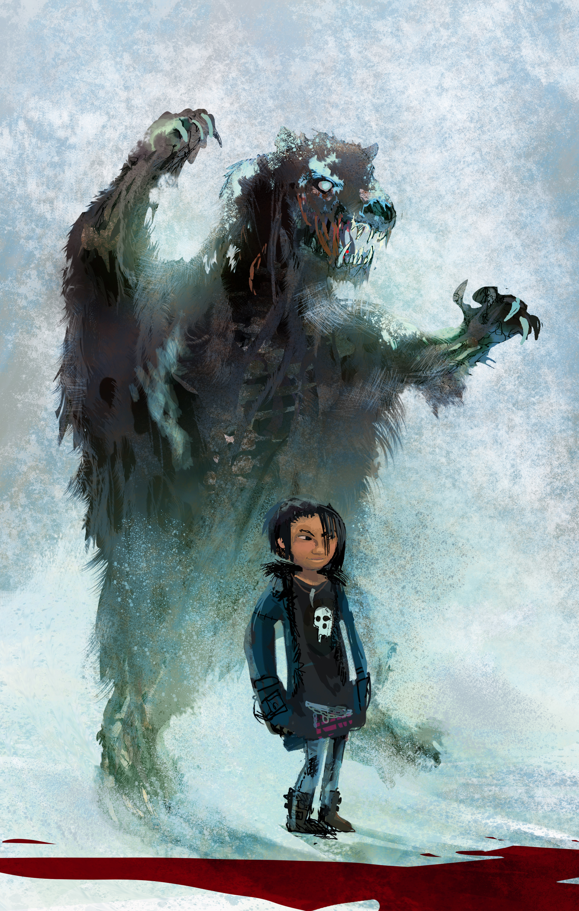

Inna Inuk TV Series
Inna Inuk is a project close to my heart.
Together with Mikisoq Lynge, I have developed this pitch for a TV series about an introverted girl who has lost her father and must reach out for help to solve the mystery of a being threatening her village.
We aim for 13 x 22 min, aimed at young adults.
Tons of people have helped, especially Anne Hofmann with the artwork, but also Per Risager, Christian Kuntz, Sune Kølster, Kevin Eilifsson, Bjarne Hansen, Irene Sparre, and many others.
My role is creative producer. Mikisoq is currently the producer.
We have had a lots of interest and lots of friendly people pushing us forward.
We are still looking for a producer to help this wonderful project take off and find financing. If that's you, or someone you know, don't hold back.
